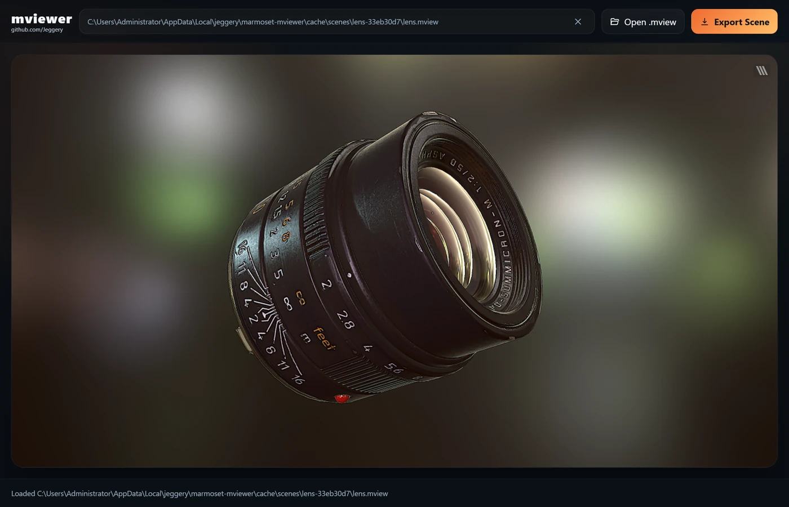
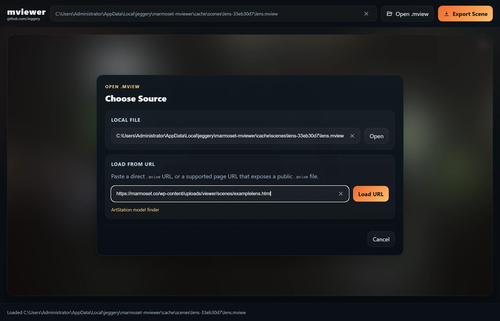
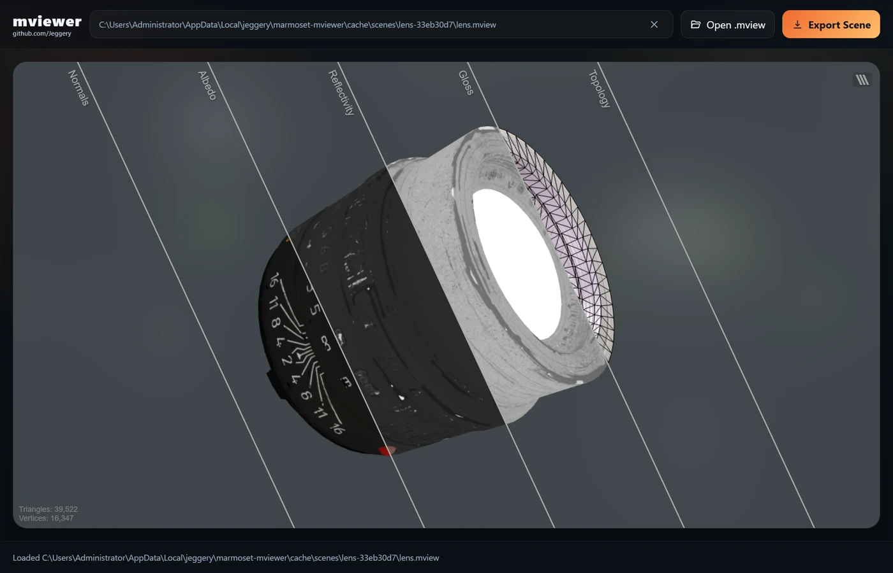
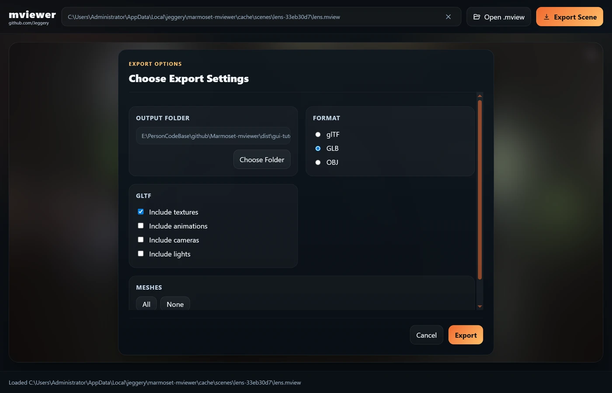
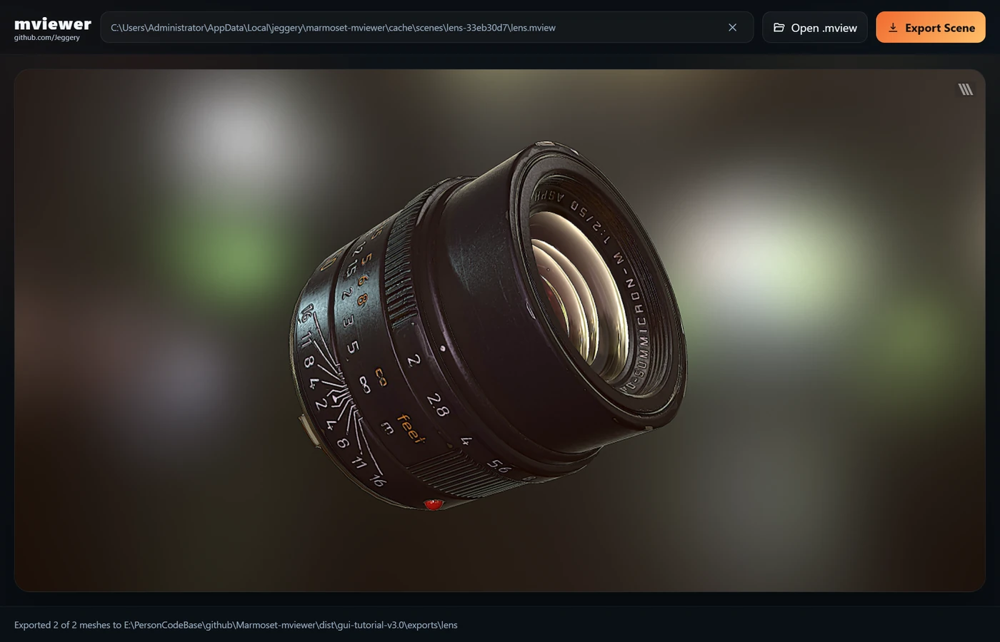

01
More than a mesh.
Export static and animated glTF scenes or a single-file GLB, complete with meshes, skins, animation, cameras, and lights.
Take your Marmoset scenes further. Preview .mview files and export to glTF, GLB, or OBJ with one native tool.
Windows, macOS & Linux Desktop + CLI

01 / THE TOOLKIT
From the first preview to the final export.
Keep the details that make your work yours.
Export static and animated glTF scenes or a single-file GLB, complete with meshes, skins, animation, cameras, and lights.
Take textures and converted PBR materials into your next tool. Choose a self-contained GLB or a glTF scene with separate assets to suit your workflow.
Open a local scene or a supported URL, inspect the result in 3D, and choose the meshes you want to export. Work visually from the first preview to the final file.
02 / THE DESKTOP WORKFLOW
A hands-on tour of the desktop app.
No terminal required. Click any screenshot to enlarge.
Download and extract your platform package, then open the mviewer application (on Windows, double-click mviewer.exe). Follow along with the Marmoset lens demo below.

Click Open .mview. Choose a local file in Local File and click Open, or paste the sample page link into Load From URL and click Load URL.
The lens demo page works directly; you do not need to find its underlying .mview URL. Other pages must expose a supported public scene.
Wait for the lens to appear in the viewport. Drag to orbit the model and scroll to zoom, then inspect the glass, metal, surface details, and lighting in the embedded Marmoset preview.
Select and copy the loaded model path in the toolbar. URL scenes show a local cached path. The toolbar clear button unloads the scene; clear buttons in Choose Source only clear their inputs.

Click Layer Views, the striped button at the top-right of the viewport. Compare Normals, Albedo, Reflectivity, Gloss, and Topology side by side.
Use the layer view to inspect material channels and the mesh wireframe. Click the same button again to return to the shaded preview.

Click Export Scene, then Choose Folder to select a destination. Choose glTF, GLB, or OBJ. For this example, select GLB and check only Include textures.
Enable Include animations, Include cameras, and Include lights only if your scene and workflow need them. The app remembers your last settings, so review them for each scene. Scroll down to Meshes to select what to export, then click Export. OBJ is for static mesh/MTL output.
Wait until the bottom status bar reports Exported 2 of 2 meshes. Open your chosen output folder: this GLB example produces lens/lens.glb, with the model and textures in one file.
Use a fresh output folder when switching formats; files from earlier exports are kept. For glTF, keep the model, .bin, and texture files together when importing.

Screenshots show an example workflow; interface details may vary by release. Demo scene: Lens on marmoset.co. Preview appearance can differ after conversion. See export compatibility notes, especially for animated scenes.
03 / GO FURTHER
04 / MAKE IT YOURS
x64 EXE / ZIP
Run the EXE or extract the ZIP and open mviewer.exe.
Apple Silicon & Intel TAR.GZ
Choose your chip, extract the archive, and open mviewer.app.
x64 TAR.GZ
Extract the archive and run the mviewer binary.
Windows preview requires WebView2 Runtime. Linux requires GTK 3 and WebKitGTK 4.1. See platform dependencies for details. Release filenames follow their version tag; choose your architecture on the release page.